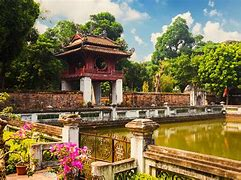
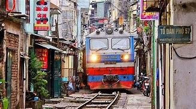
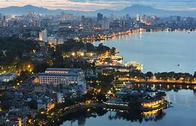

Hanoi, the capital of Vietnam, is one of the most ancient cities in the world. This place offers examples of both contemporary and classical architecture right in the city center. A renowned destination for typical cuisine, home to fascinating attractions and hospitable people, and a diverse region with a combination of multi-communities. There is plenty to enjoy in Hanoi, from mouthwatering street food to fascinating history, from traditional entertainment to recreational activities. Even with a short amount of time, you can still feel the tranquilness of the city while sipping a cup of coffee. Wandering around and shooting artistic photos on elegant streets in the Old Quarter would give you unique experiences that are hardly found anywhere else.
The Hanoi Capital Region (Vùng Thủ đô Hà Nội), a metropolitan area covering Hanoi and 6 surrounding provinces under its administration, will have an area of 13,436 square kilometres (5,188 sq mi) with 15 million people by 2020. Hanoi has experienced a rapid construction boom recently. Skyscrapers, popping up in new urban areas, have dramatically changed the cityscape and have formed a modern skyline outside the old city.
Outside the suburban areas, you can discover small charming villages which are homes to so many ethnic minorities. Hanoi joined UNESCO's Network of Creative Cities as a Design City on 31 October 2019, on the occasion of World Cities' Day. Hanoi covers an area of 3,358.6 km (1,296.8 sq mi).
The second largest city in Vietnam, it consists of 12 urban districts, 1 district-leveled town and 17 rural districts. Located within the Red River Delta, Hanoi is the cultural and political centre of Vietnam. Hanoi traced its history back to the third century BCE, when a portion of the modern-day city served as the capital of the historic Vietnamese nation of Âu Lạc. Following the collapse of Âu Lạc, the city was part of Han China. In 1010, Vietnamese emperor Lý Thái Tổ established the capital of the imperial Vietnamese nation Đại Việt in modern-day central Hanoi, naming the city Thăng Long (literally "Ascending Dragon").
Thăng Long remained Đại Việt's political centre until 1802, when the Nguyễn dynasty, the last imperial Vietnamese dynasty, moved the capital to Huế. Hanoi was the only Asia-Pacific locality to be granted the "City for Peace" title by the UNESCO on 16 July 1999, recognizing its contributions to the struggle for peace, its efforts to promote equality in the community, protect the environment, promote culture and education and care for younger generations.
Hanoi hosts various venerable educational institutions and cultural venues of significance, including the Vietnam National University, the Mỹ Đình National Stadium, and the Vietnam National Museum of Fine Arts. Amongst its achievements, it has a UNESCO World Heritage Site—The Central Sector of the Imperial Citadel of Thăng Long, first constructed in 1011AD. The city has also hosted numerous international events, including APEC Vietnam 2006, 132nd Assembly of the Inter-Parliamentary Union (IPU-132), 2019 North Korea–United States Hanoi Summit, as well as the 2003 Southeast Asian Games, 2009 Asian Indoor Games, and the upcoming 2021 Southeast Asian Games. There is plenty to enjoy in Hanoi, from mouthwatering street food to fascinating history, from traditional entertainment to recreational activities. Even with a short amount of time, you can still feel the tranquilness of the city while sipping a cup of coffee. Wandering around and shooting artistic photos on elegant streets in the Old Quarter would give you unique experiences that are hardly found anywhere else. Outside the suburban areas, you can discover small charming villages which are homes to so many ethnic minorities.
After the Đổi Mới economic policies were approved in 1986, the Communist Party and national and municipal governments hoped to attract international investments for urban development projects in Hanoi.[55] The high-rise commercial buildings did not begin to appear until ten years later due to the international investment community being skeptical of the security of their investments in Vietnam.[55] Rapid urban development and rising costs displaced many residential areas in central Hanoi.[55] Following a short period of economic stagnation after the 1997 Asian financial crisis, Hanoi resumed its rapid economic growth.[55] On 29 May 2008, it was decided that Hà Tây Province, Vĩnh Phúc Province's Mê Linh District and 4 communes of Lương Sơn District, Hòa Bình Province be merged into the metropolitan area of Hanoi from 1 August 2008.[56] Hanoi's total area then increased to 334,470 hectares in 29 subdivisions[57] with the new population being 6,232,940.,[57] effectively tripling its size.
In 2015, Hanoi is ranked 39th by Emporis in the list of world cities with most skyscrapers over 100 m; its two tallest buildings are Hanoi Landmark 72 Tower (336 m, second tallest in Vietnam after Ho Chi Minh City's Landmark 81 and third tallest in south-east Asia after Malaysia's Petronas Towers) and Hanoi Lotte Center (272 m, also, third tallest in Vietnam). The city was renamed Hanoi in 1831, and served as the capital of French Indochina from 1902 to 1945. On 6 January 1946, the National Assembly of the Democratic Republic of Vietnam designated Hanoi as the capital of the newly-independent country, which would last during the First Indochina War (1946–1954) and the Vietnam War (1955–1975). Hanoi has been the capital of the Socialist Republic of Vietnam since 1976.
The city has also hosted numerous international events, including APEC Vietnam 2006, 132nd Assembly of the Inter-Parliamentary Union (IPU-132), 2019 North Korea–United States Hanoi Summit, as well as the 2003 Southeast Asian Games, 2009 Asian Indoor Games, and the upcoming 2021 Southeast Asian Games.